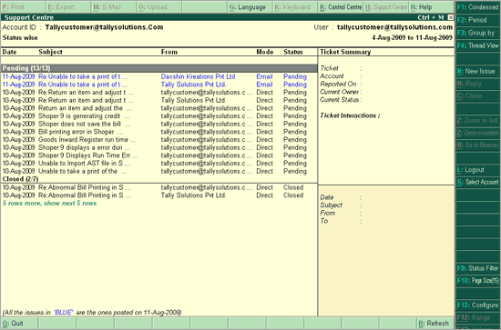
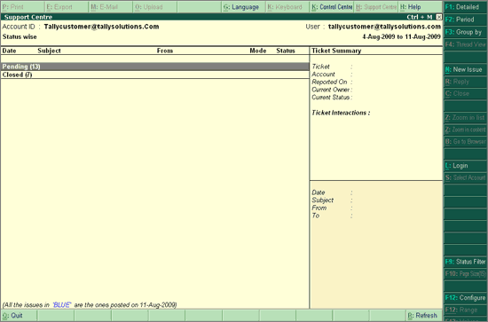

You can opt to view the queries in Detailed or Condensed mode. This button will be active only when you opt to view the list Status wise or Site wise (F3: Group by > Status/ Site).
The Detailed Status wise report displays a list of queries based on the Status (All/ Pending/ Closed) opted.

The Condensed Status wise report displays only the count of queries based on the Status (All/ Pending/ Closed) opted.
